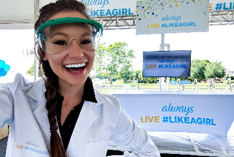

Launch Your Future as an STEM Educator
Inspire future innovators and lead STEM learning forward!
Pathway Snapshot
High School Courses | College Majors | Career Roles |
Computer Science | STEM Education | STEM Teacher (Middle or High School) |
Biology | Science Education | Computer Science Teacher |
Chemistry | Mathematics Education | Engineering Educator |
Physics | Engineering + Education | Instructional Coach |
Algebra & Calculus | Educational Technology | Curriculum Developer |
Robotics / Engineering | STEM or Subject-Area Major | STEM Program Director |
Women Who Lead the Way
Emily Calandrelli
STEM Educator, Science Communicator & TV Host

Photo Credit: The Space Gal
“I want students—especially girls—to see that science is creative, fun, and something they belong in.”
Emily Calandrelli is an American science communicator, television host, author, and aerospace engineer. Known as “The Space Gal,” she bridges entertainment and STEM education through popular media, inspiring young audiences to explore science and space. In 2024, she became the 100th woman in history to fly to space aboard Blue Origin’s New Shepard mission.
Day in the Life
What You Do Daily | Tools & Technologies You Use |
Teach STEM lessons and labs | Laptops & tablets |
Design hands-on projects | Coding platforms (Scratch, Python) |
Mentor and support students | Learning management systems |
Create inclusive lesson plans | Digital simulations & virtual labs |
Collaborate with other educators | Presentation & collaboration tools |
Attend trainings or workshops | Robotics kits & science lab tools |
Mini-Activity: Try This!
Design a Mini STEM Lesson
Pick a topic you love (like space, coding, or robotics). Create a 10-minute activity for middle school students—include a goal, materials needed, and one fun challenge question. Bonus: test it on a friend or sibling!
Careers & Resources
Degree Program Finder:
Scholarship Opportunities:
Summer Camps & Bootcamps:
Explore More:
- O*NET – https://www.onetonline.org
- Roadtrip Nation – https://roadtripnation.com
You Belong Here
If you love helping others, explaining ideas, experimenting, coding, or being creative with technology, STEM education could be your path. You don’t have to choose between people and tech—you can inspire, lead, and innovate while empowering others to do the same.
Your path. Your future. And yes—you belong in STEM. ✨